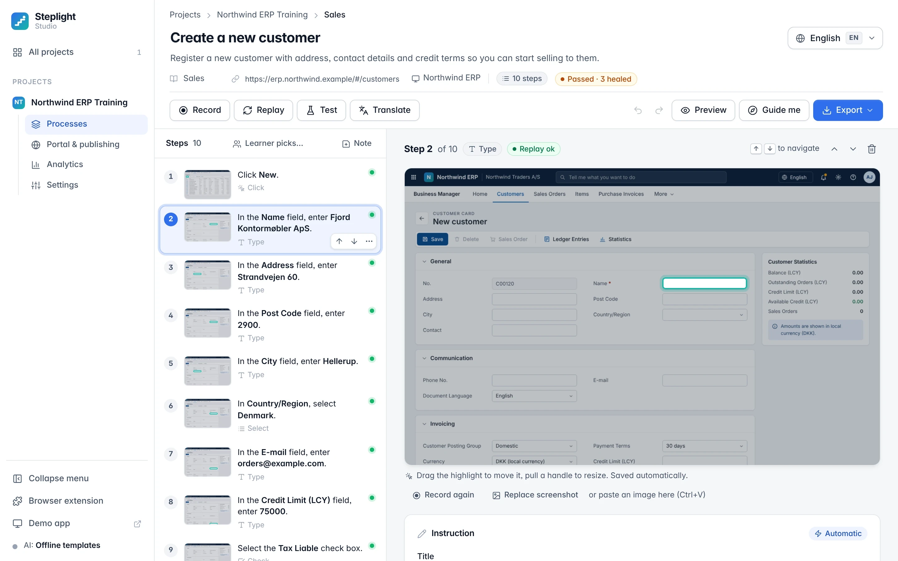
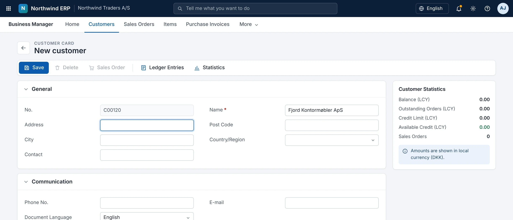
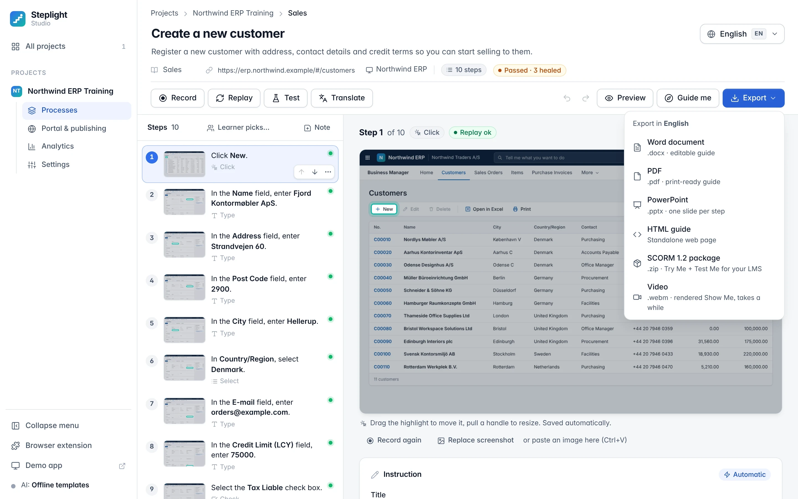
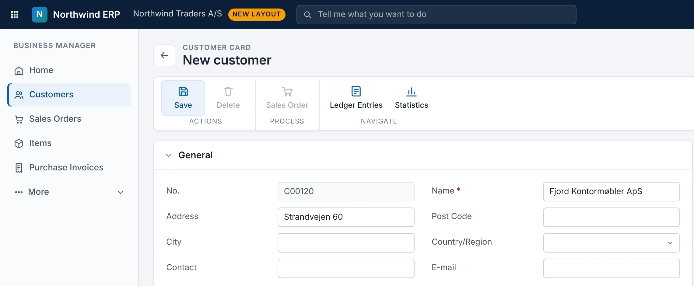
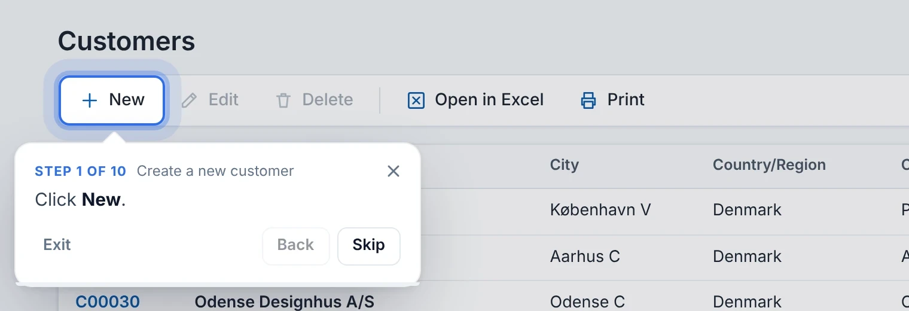
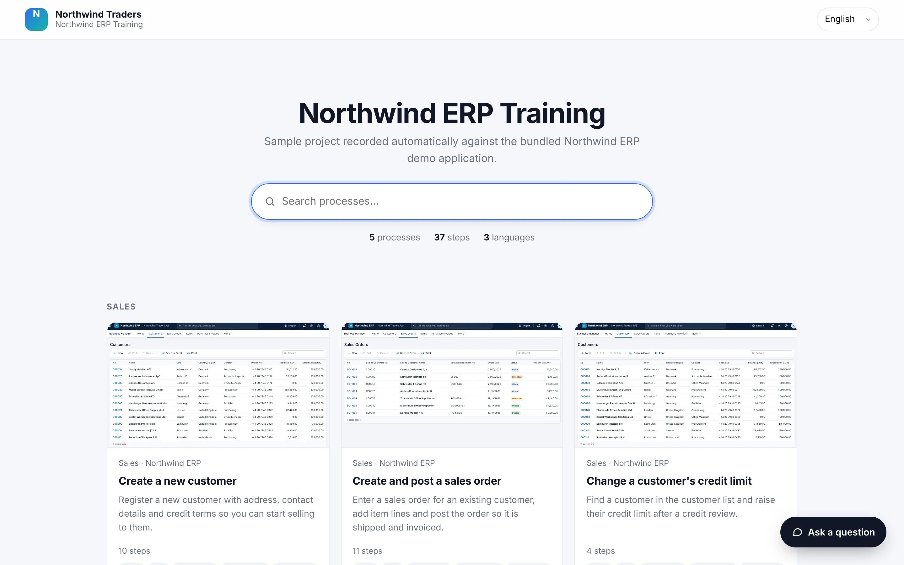
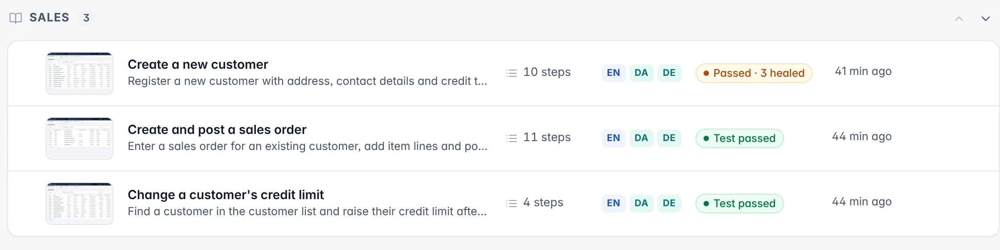

<title>Steplight One-Pager</title>
<meta name="claude:viewport-fit-sides" content="cover">
<link rel="preconnect" href="https://fonts.googleapis.com">
<link rel="preconnect" href="https://fonts.gstatic.com" crossorigin>
<link rel="stylesheet" href="https://fonts.googleapis.com/css2?family=Inter:wght@400..800&family=JetBrains+Mono:wght@500&display=swap">
<style>
/* Layout: one A4 sheet. A dark hero band, the problem in one row, the three-step method, a 2×2 feature grid, a trust strip and a dark CTA band.
   One light look on purpose: this page is a printed leave-behind, so it keeps the same colours on any screen. */
:root {
  --ink: #101828;
  --ink-2: #475467;
  --ink-3: #667085;
  --ground: #e6eaf0;
  --paper: #fbfcfd;
  --card: #f2f4f7;
  --line: #e1e5eb;
  --brand: #2f6fed;
  --brand-ink: #1d4ed8;
  --brand-tint: #e8f0ff;
  --teal: #14b8a6;
  --teal-ink: #0f766e;
  --night: #101828;
  --night-2: #1d2939;
  --night-line: #344054;
  --on-night: #f6f7f9;
  --on-night-2: #a9b3c2;
  --mint: #5eead4;
  --amber-bg: #fef0c7;
  --amber-ink: #93370d;
  --sans: 'Inter', 'Segoe UI', Arial, sans-serif;
  --mono: 'JetBrains Mono', 'Courier New', monospace;
  color-scheme: light;
}
* { box-sizing: border-box; }
body {
  background: var(--ground);
  color: var(--ink);
  font-family: var(--sans);
  font-size: 11.5px;
  line-height: 1.5;
  padding-block: 32px;
  padding-left: max(16px, env(safe-area-inset-left, 0px));
  padding-right: max(16px, env(safe-area-inset-right, 0px));
  -webkit-print-color-adjust: exact;
  print-color-adjust: exact;
}
h1, h2, h3, p { margin: 0; }
h1, h2, h3 { text-wrap: balance; }
img { display: block; max-width: 100%; }

.sheet {
  width: 210mm;
  min-height: 297mm;
  margin: 0 auto;
  background: var(--paper);
  box-shadow: 0 24px 64px rgba(16, 24, 40, 0.16);
  display: flex;
  flex-direction: column;
}
.band { padding: 0 40px; }
.eyebrow {
  font-size: 10px;
  font-weight: 700;
  letter-spacing: 0.14em;
  text-transform: uppercase;
  color: var(--brand-ink);
}

/* Hero */
.hero {
  background: radial-gradient(ellipse at 92% 0%, #1e3a8a 0%, var(--night) 62%);
  color: var(--on-night);
  padding-block: 32px 30px;
  display: grid;
  grid-template-columns: 1.05fr 1fr;
  gap: 26px;
  align-items: center;
}
.brand { display: flex; align-items: center; gap: 10px; margin-bottom: 14px; }
.brand svg { width: 28px; height: 28px; flex: none; }
.brand span { font-size: 18px; font-weight: 700; letter-spacing: -0.01em; }
.hero h1 {
  font-size: 29px;
  line-height: 1.08;
  font-weight: 800;
  letter-spacing: -0.025em;
}
.hero h1 em { font-style: normal; color: var(--mint); }
.hero .lede { margin-top: 12px; font-size: 12.5px; line-height: 1.55; color: var(--on-night-2); max-width: 46ch; }
.hero figure { margin: 0; min-width: 0; }
.hero figure img {
  width: 100%;
  aspect-ratio: 16 / 10;
  object-fit: cover;
  object-position: left top;
  border-radius: 8px;
  border: 1px solid var(--night-line);
  box-shadow: 0 18px 40px rgba(0, 0, 0, 0.45);
}

/* Problem */
.problem { padding-block: 20px 18px; border-bottom: 1px solid var(--line); }
.problem .row { margin-top: 8px; display: grid; grid-template-columns: repeat(3, 1fr) 1.1fr; gap: 16px; align-items: start; }
.pain h3 { font-size: 12.5px; font-weight: 700; line-height: 1.3; }
.pain p { color: var(--ink-2); }
.verdict { font-size: 13.5px; font-weight: 700; line-height: 1.3; color: var(--ink); border-left: 3px solid var(--teal); padding-left: 12px; }

/* Method */
.method { padding-block: 18px 20px; }
.steps { margin-top: 8px; display: grid; grid-template-columns: repeat(3, 1fr); gap: 16px; }
.step { min-width: 0; display: flex; flex-direction: column; gap: 8px; }
.step img {
  width: 100%;
  aspect-ratio: 16 / 9;
  object-fit: cover;
  object-position: left top;
  border-radius: 6px;
  border: 1px solid var(--line);
}
.step header { display: flex; align-items: baseline; gap: 8px; }
.num {
  flex: none;
  width: 20px; height: 20px;
  border-radius: 50%;
  background: var(--brand-ink);
  color: #fff;
  font-size: 11px;
  font-weight: 700;
  display: grid;
  place-items: center;
  transform: translateY(-1px);
}
.step h3 { font-size: 14px; font-weight: 800; letter-spacing: -0.01em; }
.step p { color: var(--ink-2); }

/* Features */
.features { padding-block: 0 20px; display: grid; grid-template-columns: repeat(4, 1fr); gap: 10px; }
.feature {
  min-width: 0;
  background: var(--card);
  border-radius: 10px;
  padding: 12px;
  display: flex;
  flex-direction: column;
  gap: 7px;
}
.feature h3 { font-size: 12px; white-space: nowrap; font-weight: 700; line-height: 1.3; }
.feature p { color: var(--ink-2); font-size: 11px; line-height: 1.45; }
.visual { height: 104px; border-radius: 6px; overflow: hidden; }
.visual img { width: 100%; height: 100%; object-fit: cover; border-radius: 6px; border: 1px solid var(--line); }
.feature img { width: 100%; border-radius: 6px; border: 1px solid var(--line); }
.shot-guide { object-position: left 75%; }
.shot-portal { object-position: 52% 18%; }
.lang { display: flex; flex-direction: column; justify-content: center; gap: 6px; }
.tests { display: flex; flex-direction: column; justify-content: center; align-items: start; gap: 6px; }
.tests img { height: 64px; object-position: left top; }
.chips { display: flex; flex-wrap: wrap; gap: 3px; }
.chip {
  font-size: 9.5px;
  font-weight: 700;
  color: var(--brand-ink);
  background: var(--brand-tint);
  border-radius: 4px;
  padding: 1px 5px;
}
.code {
  font-family: var(--mono);
  font-size: 11px;
  background: var(--night);
  color: var(--on-night);
  border-radius: 6px;
  padding: 9px 10px;
  display: grid;
  gap: 2px;
}
.code span { color: var(--on-night-2); margin-right: 10px; }
.code .langs { color: var(--mint); font-size: 9.5px; letter-spacing: 0; white-space: nowrap; padding-bottom: 4px; margin-bottom: 3px; border-bottom: 1px solid var(--night-line); }
.pill {
  align-self: start;
  font-size: 11px;
  font-weight: 700;
  color: var(--amber-ink);
  background: var(--amber-bg);
  border-radius: 999px;
  padding: 3px 10px;
}

/* Trust */
.trust { padding-block: 14px; border-top: 1px solid var(--line); display: flex; flex-wrap: wrap; gap: 6px 16px; align-items: center; }
.trust .eyebrow { margin-right: 4px; }
.trust li { display: flex; align-items: center; gap: 5px; font-size: 11px; color: var(--ink); }
.trust ul { list-style: none; margin: 0; padding: 0; display: contents; }
.trust svg { width: 14px; height: 14px; flex: none; color: var(--teal-ink); }

/* CTA */
.cta {
  margin-top: auto;
  background: var(--night);
  color: var(--on-night);
  padding-block: 16px;
  display: flex;
  flex-wrap: wrap;
  align-items: center;
  gap: 14px 24px;
}
.cta .line { font-size: 16px; font-weight: 800; letter-spacing: -0.015em; flex: 1 1 280px; }
.cta .line em { font-style: normal; color: var(--mint); display: block; }
.cta .button {
  font-size: 13px;
  font-weight: 700;
  color: #fff;
  background: var(--brand);
  border-radius: 999px;
  padding: 9px 20px;
}
.cta .contact { font-size: 11.5px; color: var(--on-night-2); user-select: all; }

@page { size: A4; margin: 0; }
@media print {
  body { background: var(--paper); padding: 0; }
  .sheet { box-shadow: none; width: 210mm; height: 297mm; min-height: 0; overflow: hidden; }
}
@media screen and (max-width: 840px) {
  body { padding-block: 0; padding-left: 0; padding-right: 0; }
  .sheet { width: 100%; min-height: 0; box-shadow: none; }
  .band { padding-left: max(16px, env(safe-area-inset-left, 0px)); padding-right: max(16px, env(safe-area-inset-right, 0px)); }
  .hero { grid-template-columns: 1fr; }
  .problem .row, .steps, .features { grid-template-columns: 1fr; }
  .hero h1 { font-size: 28px; }
  body { font-size: 14px; }
}
@media (prefers-reduced-motion: reduce) { * { scroll-behavior: auto; } }
</style>

<main class="sheet">
  <header class="hero band">
    <div>
      <div class="brand">
        <svg viewBox="0 0 32 32" aria-hidden="true"><defs><linearGradient id="op-g" x1="0" y1="0" x2="1" y2="1"><stop offset="0" stop-color="#2f6fed"/><stop offset="1" stop-color="#14b8a6"/></linearGradient></defs><rect width="32" height="32" rx="8" fill="url(#op-g)"/><path d="M8 23h5v-5h5v-5h6" fill="none" stroke="#fff" stroke-width="3" stroke-linecap="round" stroke-linejoin="round"/><circle cx="23.5" cy="8.5" r="2.5" fill="#fff"/></svg>
        <span>Steplight</span>
      </div>
      <h1>Your software updated overnight. <em>Your training didn’t.</em></h1>
      <p class="lede">Record a process once in your browser. Steplight publishes the guides, videos, practice, tests and in-app help, and keeps all of it current after every update.</p>
    </div>
    <figure>
      
    </figure>
  </header>

  <section class="problem band" aria-labelledby="problem-h">
    <p class="eyebrow" id="problem-h">The problem</p>
    <div class="row">
      <div class="pain"><h3>Release after release</h3><p>The systems you run on keep changing.</p></div>
      <div class="pain"><h3>Every screenshot, by hand</h3><p>Re-shot and rewritten after each update.</p></div>
      <div class="pain"><h3>Every language, again</h3><p>Each copy redone and checked.</p></div>
      <p class="verdict">Until the guides catch up, your people guess.</p>
    </div>
  </section>

  <section class="method band" aria-labelledby="method-h">
    <p class="eyebrow" id="method-h">How it works</p>
    <div class="steps">
      <article class="step">
        
        <header><span class="num">1</span><h3>Record</h3></header>
        <p>Do the task once in the real application. Every click becomes a written step with a highlighted screenshot.</p>
      </article>
      <article class="step">
        
        <header><span class="num">2</span><h3>Publish</h3></header>
        <p>Word, PDF, PowerPoint, HTML, video, Show me, Try me, scored Test me, SCORM 1.2, a portal and Guide me.</p>
      </article>
      <article class="step">
        
        <header><span class="num">3</span><h3>Replay</h3></header>
        <p>After an update, Steplight re-runs the process, heals what moved and refreshes every screenshot.</p>
      </article>
    </div>
  </section>

  <section class="features band" aria-label="Features">
    <div class="feature">
      <h3>Guide me in the app</h3>
      <div class="visual"></div>
      <p>Step-by-step help inside the real application. The highlight moves with every click.</p>
    </div>
    <div class="feature">
      <h3>Seven languages</h3>
      <div class="visual lang">
        <div class="code"><div class="langs">EN DA DE FR ES NL SV</div><div><span>EN</span>Click New.</div><div><span>DA</span>Klik på Ny.</div></div>
      </div>
      <p>Replay runs your app in each language and rebuilds every step from the real screens.</p>
    </div>
    <div class="feature">
      <h3>A learning portal</h3>
      <div class="visual"></div>
      <p>One branded home for every process. Answers come only from your documented processes.</p>
    </div>
    <div class="feature">
      <h3>Built-in tests</h3>
      <div class="visual tests">
        <span class="pill">Passed · 3 healed</span>
        
      </div>
      <p>Run a process as a test before go-live and see which steps changed.</p>
    </div>
  </section>

  <section class="trust band" aria-label="Trust and deployment">
        <ul>
      <li><svg viewBox="0 0 16 16" aria-hidden="true"><path d="M3 8.5l3 3 7-7" fill="none" stroke="currentColor" stroke-width="2" stroke-linecap="round" stroke-linejoin="round"/></svg>One container on a dedicated server</li>
      <li><svg viewBox="0 0 16 16" aria-hidden="true"><path d="M3 8.5l3 3 7-7" fill="none" stroke="currentColor" stroke-width="2" stroke-linecap="round" stroke-linejoin="round"/></svg>Access key for authors</li>
      <li><svg viewBox="0 0 16 16" aria-hidden="true"><path d="M3 8.5l3 3 7-7" fill="none" stroke="currentColor" stroke-width="2" stroke-linecap="round" stroke-linejoin="round"/></svg>Usage counted without names</li>
      <li><svg viewBox="0 0 16 16" aria-hidden="true"><path d="M3 8.5l3 3 7-7" fill="none" stroke="currentColor" stroke-width="2" stroke-linecap="round" stroke-linejoin="round"/></svg>AI opt-in, works offline</li>
      <li><svg viewBox="0 0 16 16" aria-hidden="true"><path d="M3 8.5l3 3 7-7" fill="none" stroke="currentColor" stroke-width="2" stroke-linecap="round" stroke-linejoin="round"/></svg>Extension talks only to your server</li>
    </ul>
  </section>

  <footer class="cta band">
    <p class="line">Record once. Publish everywhere. <em>Always up to date.</em></p>
    <span class="button">Book a demo</span>
    <span class="contact">[name] · [email] · [phone]</span>
  </footer>
</main>
